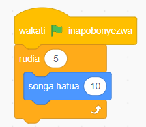
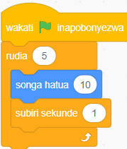

Kazi ya kufanya namba 5
Unda programu inayosogeza kihusika mbele hatua 10 kwa mara 5.
Hatua
1. Bofya bloku la Matukio kisha chagua bloku ya wakati bendera ya kijani inapobonyezwa.
2. Bofya bloku la Kidhibiti kisha chagua bloku ya rudia ( ).
3. Weka idadi ya mara ambazo kitanzi kinapaswa kurudia ndani ya mabano ya kitanzi cha rudia ( ).
4. Ongeza msimbo wa kurudiwa ndani ya bloku la rudia ( ).
5. Bofya bendera ya kijani kuanzisha programu. Utaona kuwa kihusika kitasonga mbele kwa hatua 10 mara tano. Angalia au sikiliza maelezo ya Kielelezo namba 7 (a).
6. Ongeza bloku la subiri sekunde (1) ili kuweza kuona mwendo wa kihusika kwa urahisi. Angalia au sikiliza maelezo ya Kielelezo namba 7 (b).
Bloku za msimbo
Kielelezo namba saba kinaonyesha kitanzi cha rudia katika programu: (a) programu ya kurudia kusonga hatua 10 mara tano; na (b) programu hiyo ikiwa pia inasubiri sekunde moja baada ya kila hatua.

(a)

(b)
Kielelezo namba 7: Kitanzi cha rudia ( ) katika programu